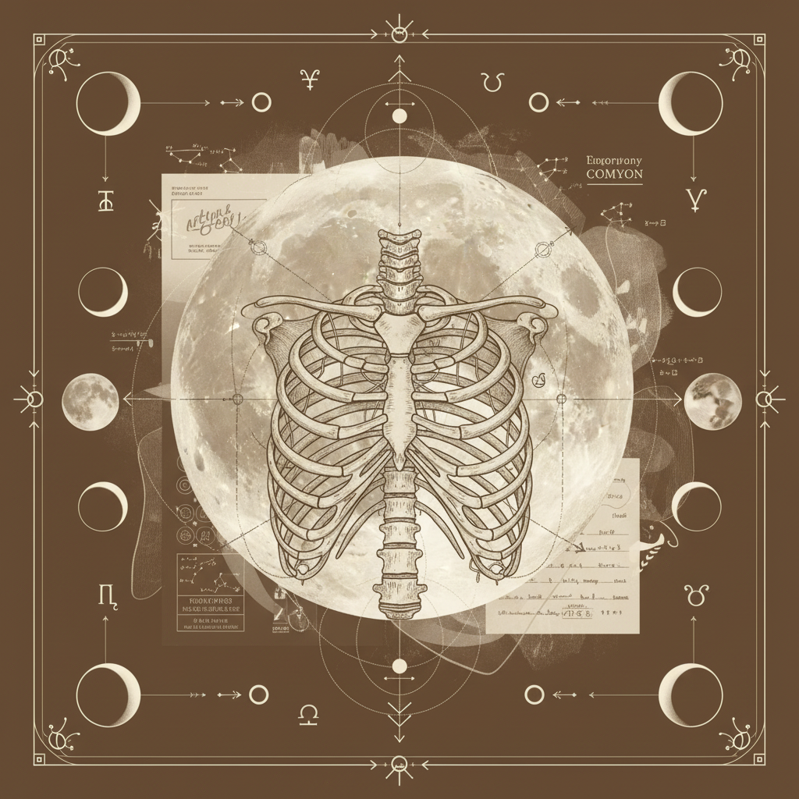

Journal Entry / Series 22.26
Sequential: Gemini → Cancer
Accession No.
LC-2024-W22
Voice Nourishing
to Womb
"The ripening of communication into the soft, silent sanctuary of the emotional body. A descent from the airy heights of Gemini to the moon-lit waters of Cancer."

Fig 1.1: Somatic resonance patterns observed between vocal folds and pelvic diaphragm.
14-Day Protocol Summary
The Air Churn
Active Gemini engagement. Rapid vocalization and breathwork focusing on the Lungs and Arms.
Vocal Condensation
Transitional phase. Hum-toning focusing resonance into the thoracic cavity and upper stomach.
The Deep Well
Full Cancer maturation. Emotional sanctuary protocol. Silence alternating with primal vocal sighs focused on the Womb and Stomach.
Somatic Research Prompts
Inquiry I
How does the tension in your hands (Gemini) mirror the grip of your digestive tract (Cancer)? Track the pulse between palm and solar plexus.
Inquiry II
Observe the transition from "Speaking About" (Air) to "Feeling Through" (Water). Where does the voice go when it is no longer seeking to be understood?
Inquiry III
Locate the "Sanctuary Breath" in the back-body. Does the breath expand the ribs or soften the belly?
Archetypal Journey
The Gemini influence provides the lexicon—the names of our ghosts. As we move into Cancer, the lexicon dissolves into presence. The lungs (communication) serve only to draw the light down into the stomach (sustenance).
"The archive remembers what the body forgets. Every workbook is a step toward the integration of the lunar cycle within the cellular memory."